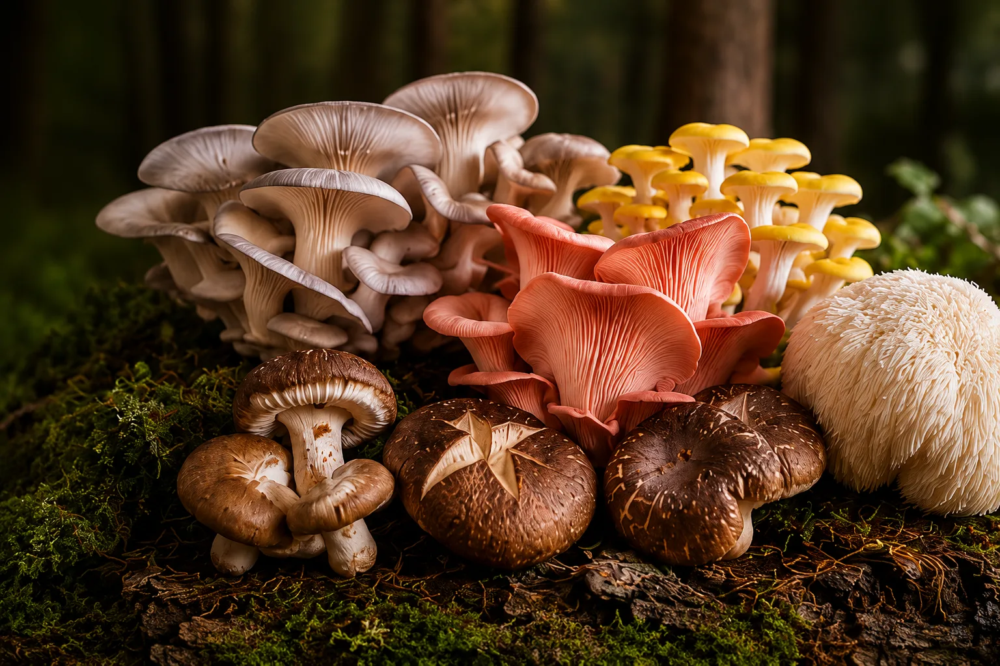
Paddenstoelen zoals je ze nog nooit hebt beleefd. Van spore tot jouw bord.
Puur en ambachtelijk gekweekt — binnen in onze zeecontainer én buiten in het voedselbos. Boordevol smaak, geplukt op de dag dat jij ze proeft.
Het echte werk zie je niet
Onder elk zwammetje zit een netwerk van kilometers fijne draden: mycelium. Het verbindt, groeit, breekt af en bouwt opnieuw op — de stille motor van elk gezond ecosysteem.
In onze kwekerij in Knokke‑Heist geven we dat netwerk precies wat het nodig heeft: vers substraat, de juiste vochtigheid en veel geduld. De rest doet de natuur.
Ja, we praten écht iets te graag over mycelium. Vraag er gerust eens naar — dan ben je wel een uurtje zoet.
Tijd om naar boven te komen.
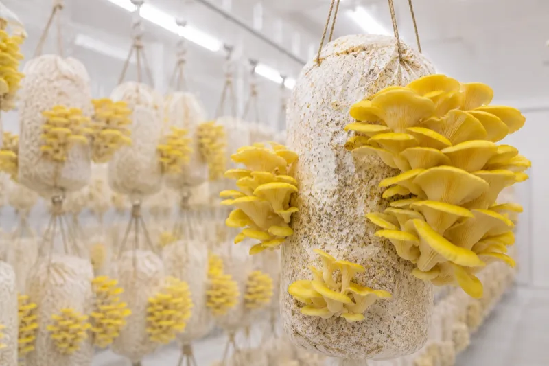
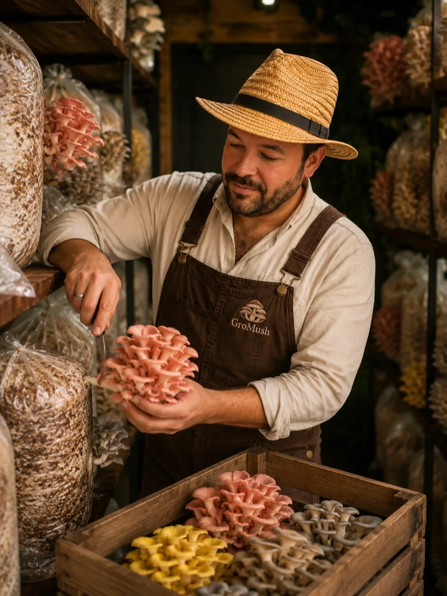
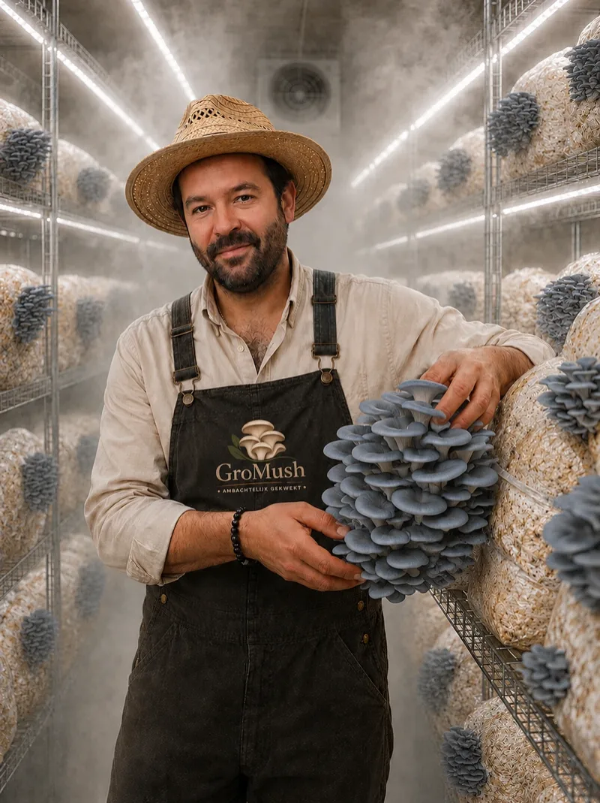
Het begon met een fascinatie
Sommige ondernemers starten een bedrijf omdat ze een gat in de markt zien. Bij mij begon het anders — met een jarenlange fascinatie voor de verborgen wereld van schimmels en mycelium.
Uit die passie is GroMush ontstaan: een kleinschalige kwekerij in Knokke‑Heist waar ik elke kweekcyclus met de hand opvolg, van substraat tot oogst.
Vakmanschap boven massaproductie. Kwaliteit boven kwantiteit. Samenwerking boven verkoop. Zo simpel is het eigenlijk.
— Anthony Watteeuw, kweker
Lees het hele verhaalVan stro tot bord
-
Pasteuriseren
Stro en substraat, klaar met hitte en stoom.
-
Inoculeren
Het mycelium krijgt de ruimte om te groeien.
-
Incuberen
Rust, warmte en geduld doen de rest.
-
Vruchten
In de kweekruimtes groeien de zwammen.
-
Oogsten
Met de hand, op het perfecte moment.
-
Op jouw bord
Dagvers geleverd voor optimale smaak.
Binnen én buiten. Één passie.
Onze zwammen groeien op twee plekken die niet harder konden verschillen — en dat proef je.
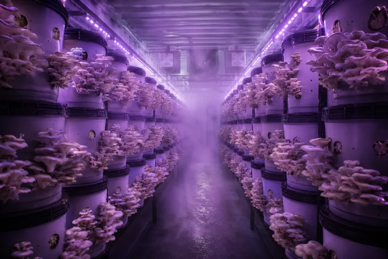
Binnenkweek · de zeecontainer
Gecontroleerde vochtigheid, mist en licht: hier oogsten we het hele jaar door oesterzwammen van constante topkwaliteit.
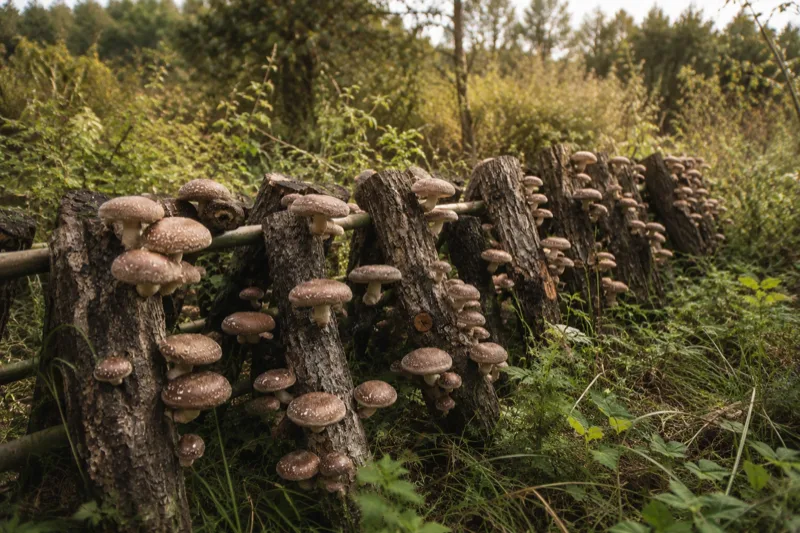
Buitenkweek · het voedselbos
Op boomstammen, op het ritme van de seizoenen: shiitake en bosgenoten groeien hier 100% natuurlijk.
Twaalf karakters. Één kwekerij.
Van de klassieke grijze oesterzwam tot shiitake, morieltje en de diepzwarte Black Pearl: elk met een eigen karakter, kleur en smaak. Kies je favoriet — of laat de chef in jou beslissen.
 Witte oesterzwam
Mild en zacht, veelzijdig in de keuken.
Witte oesterzwam
Mild en zacht, veelzijdig in de keuken.
 Grijze oesterzwam
Stevig en mals, de klassieker.
Grijze oesterzwam
Stevig en mals, de klassieker.
 Gele oesterzwam
Fijn en fris, licht nootachtig.
Gele oesterzwam
Fijn en fris, licht nootachtig.
 Blauwe oesterzwam
Vol van smaak en mooi stevig.
Blauwe oesterzwam
Vol van smaak en mooi stevig.
 Roze oesterzwam
Fruitig en licht ziltig, kort bakken.
Roze oesterzwam
Fruitig en licht ziltig, kort bakken.
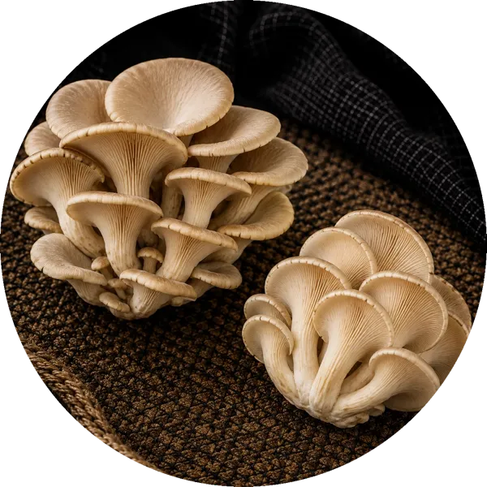
Zomer oesterzwam Licht en sappig, op z’n best in de zomer.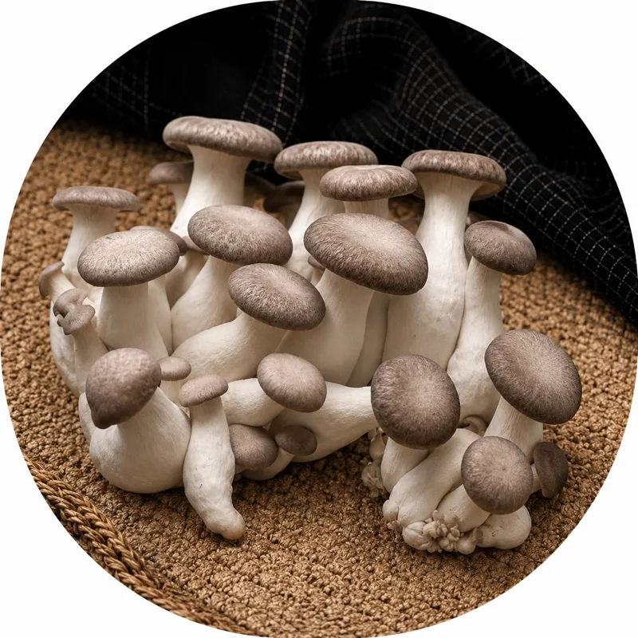
Black Pearl Diepdonkere kop, stevige beet, volle smaak.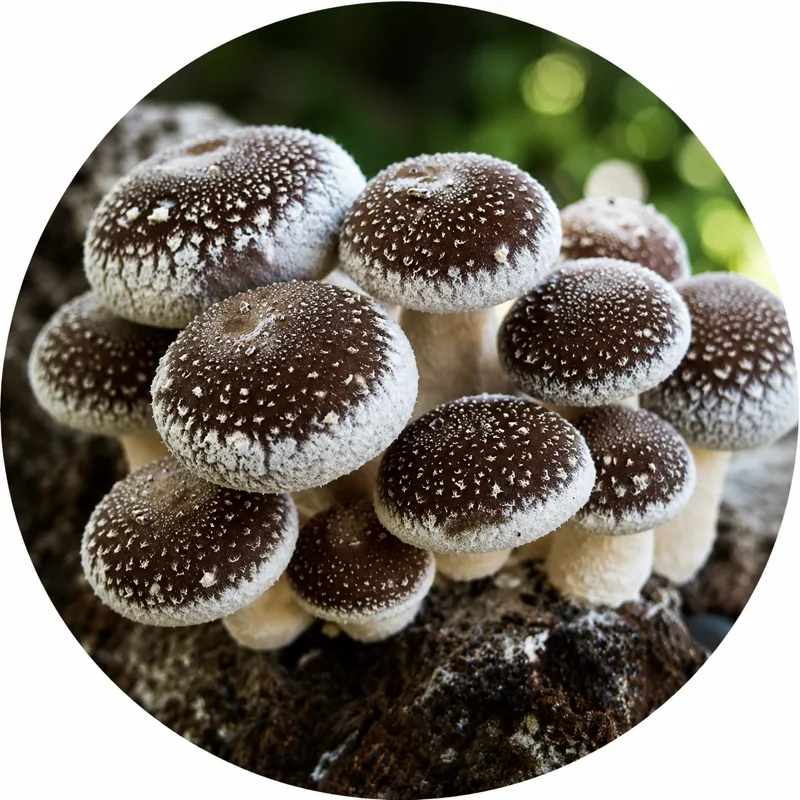
Shiitake Intens, aards en boordevol umami.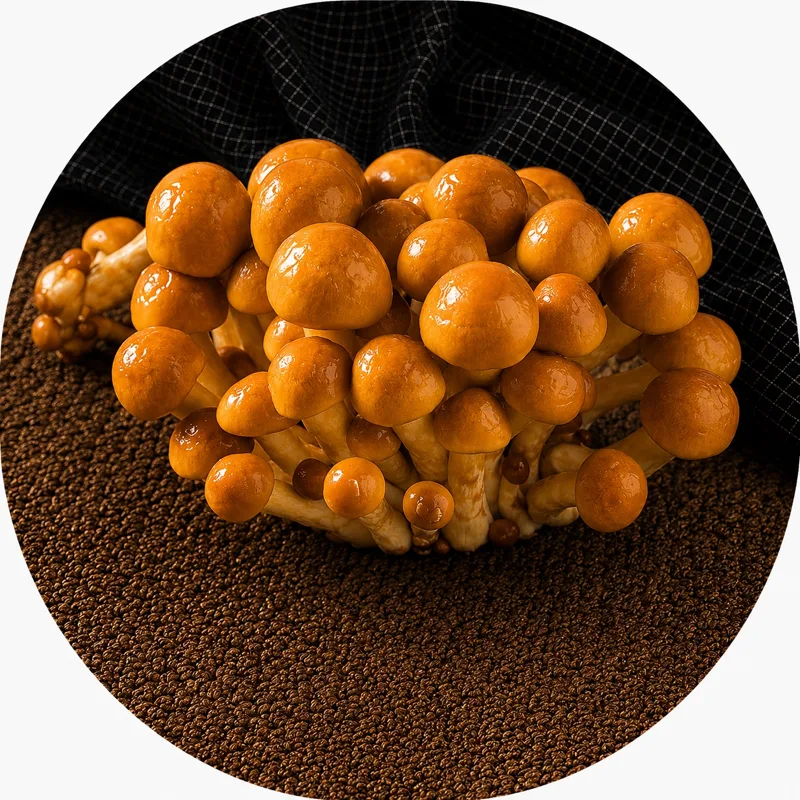
Nameko Goudglanzend, zijdezacht en licht zoet.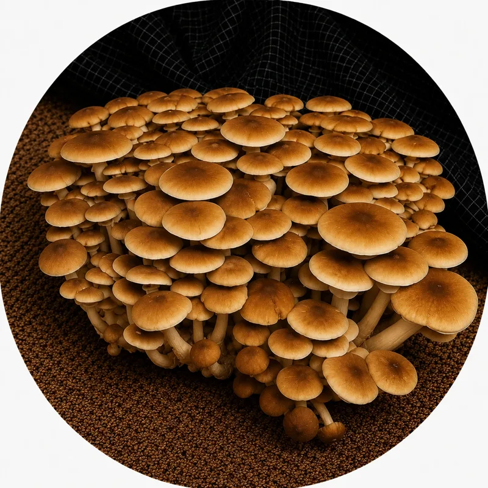
Pioppino Knapperige steeltjes, diep bosaroma.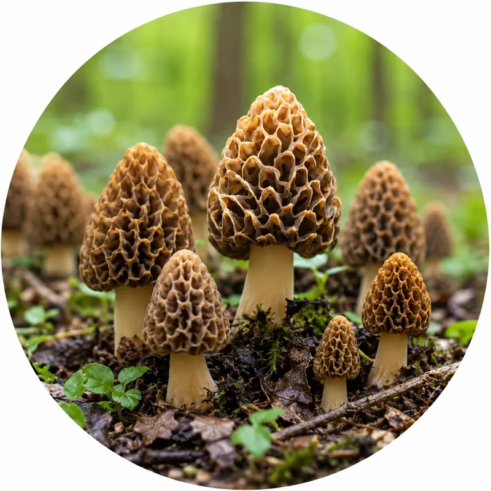
Morieltje De delicatesse waar chefs voor omrijden.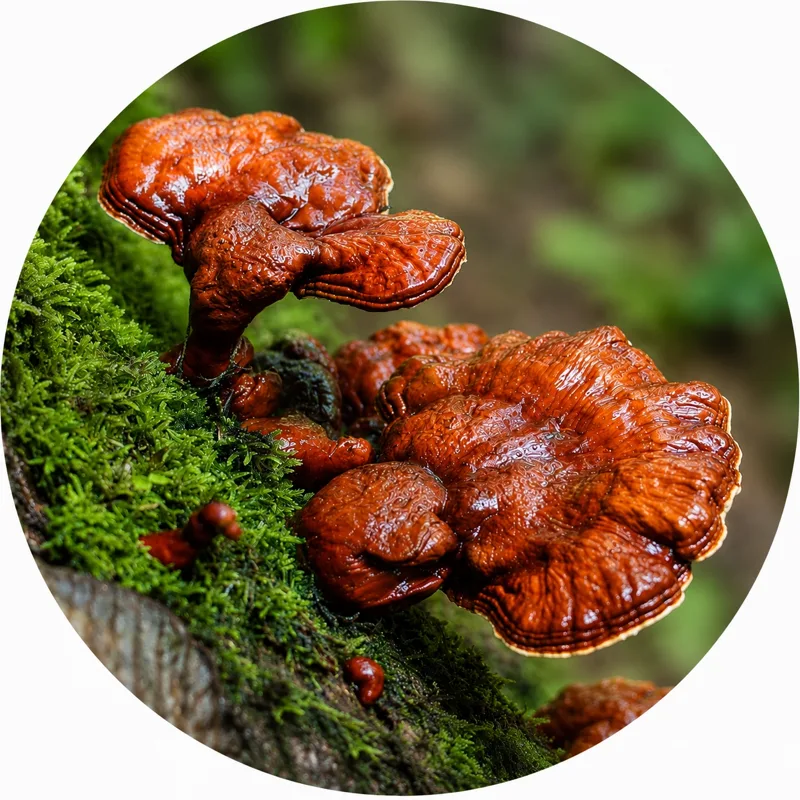
Reishi De legendarische vitaliteitszwam.Geen voedselkilometers, wel smaak
Veel bijzondere paddenstoelen leggen duizenden kilometers af voor ze op een bord belanden. De onze hooguit dertig minuten: ’s ochtends geoogst, dagvers geleverd in Knokke‑Heist, Damme en Brugge. Zonder omweg, zonder koelcel-marathon.
- 0voedselkilometers
- 30minuten van oogst tot bord
- 15+soorten paddenstoelen
En dan: het bord.
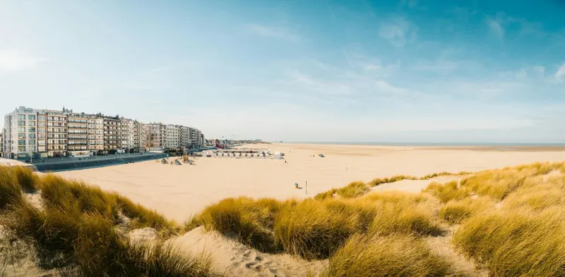

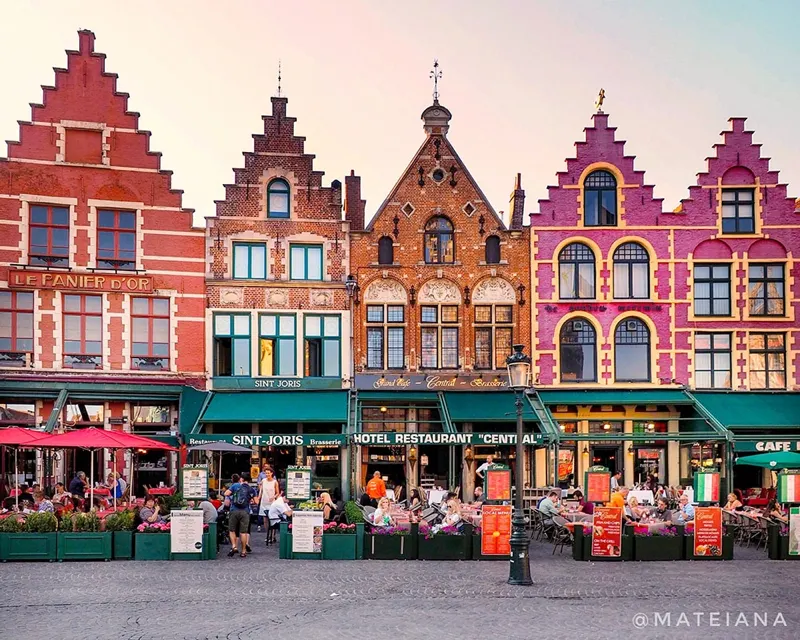
Waar chefs ze laten schitteren
In restaurants, bistro’s en thuiskeukens van Knokke‑Heist tot Brugge krijgen onze zwammen de hoofdrol: gegrild, gewokt of gewoon kort gebakken in goeie boter. Meer hebben ze niet nodig.
Waar passie groeit, smaak bloeit en lokaal het verschil maakt.
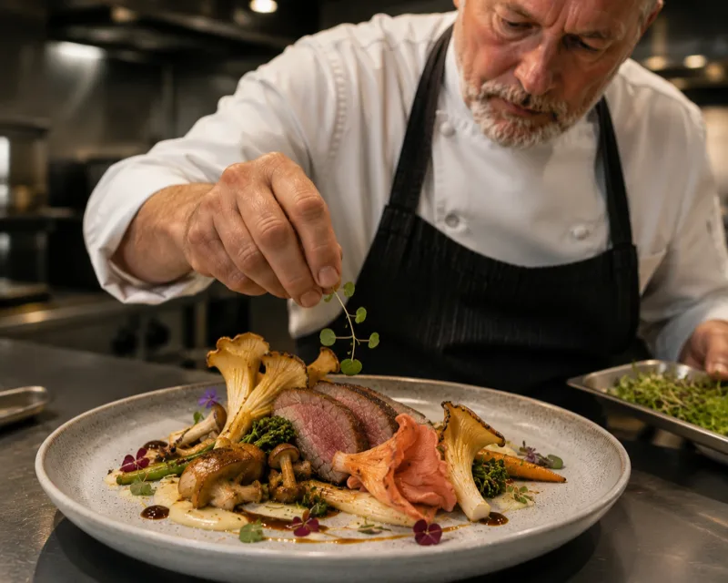
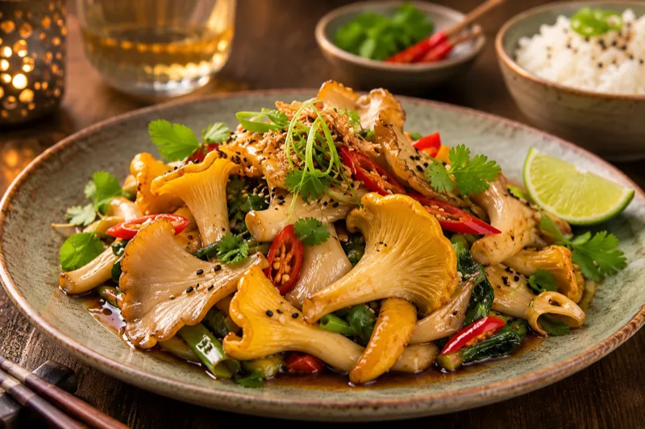
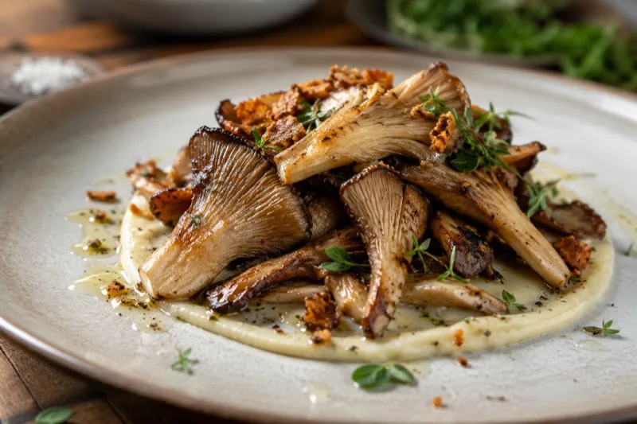
Word eigenaar van je eigen oogst
De magie hoeft niet bij kijken te blijven: kweek zelf mee, thuis of in ons voedselbos.
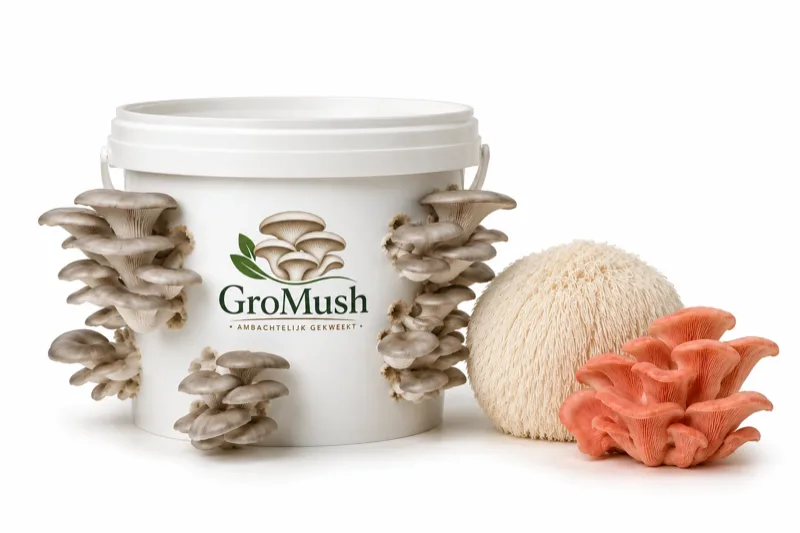
Eigen kweekemmer
Kweek je eigen oesterzwammen vanuit je keuken. Eenvoudig, leerrijk en verrassend lekker.
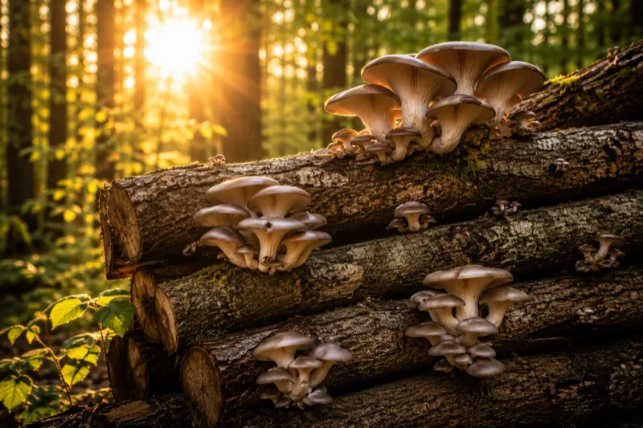
Eigen boomstam
Word mede-eigenaar van een stuk voedselbos en ontvang jaarlijks jouw oogst verse paddenstoelen.
Of kom het gewoon beleven: rondleidingen, proeverijen en workshops in de kwekerij.Plan je bezoek
Honger gekregen? Vertel ons wie je bent.
Chef, grootkeuken of thuiskok: voor elk bord hebben we een aanbod op maat.